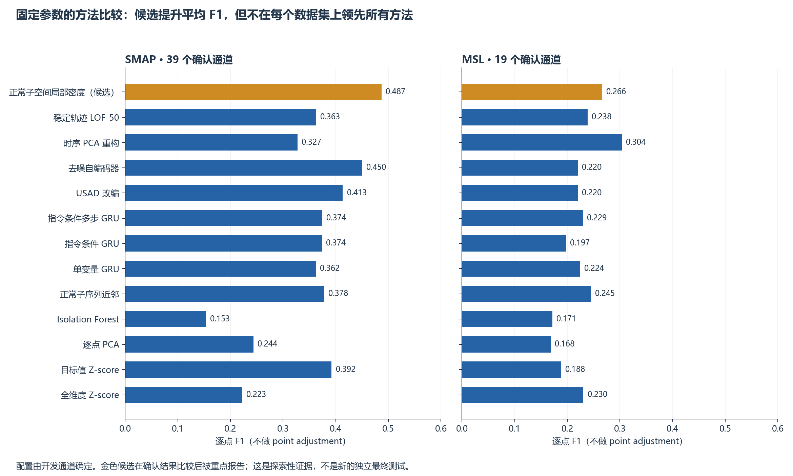
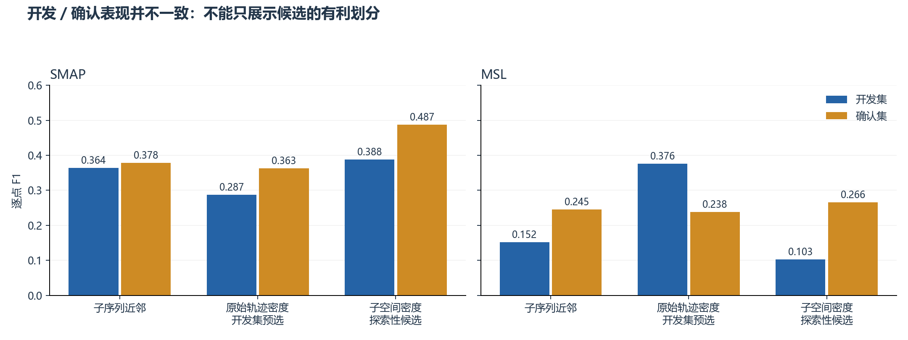
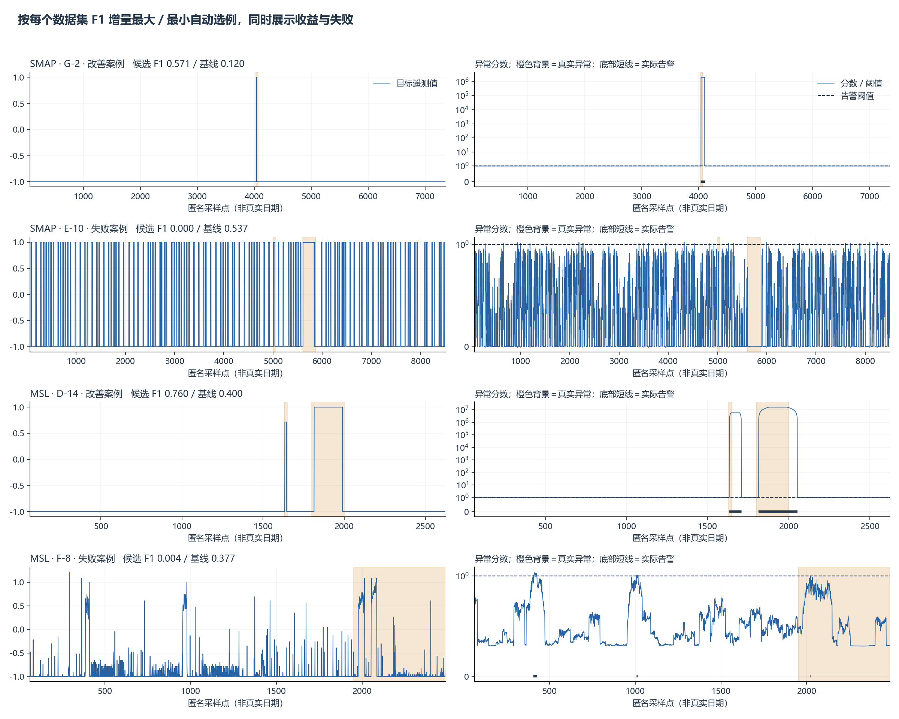

NASA SMAP/MSL：方法优化与完整实验
AIAA 3111 · 异常检测 · v2 · 2026-10-06 · 80 个有效通道
本轮找到数值上超过已有基线的候选：正常子空间的稳定局部密度检测。
在 58 个确认通道上，SMAP／MSL 逐点 F1 为 0.487／0.266；较强子序列近邻基线为 0.378／0.245，两数据集等权平均从 0.312 → 0.376（+0.065，约 +20.9%）。这不是所有指标、所有划分全面领先。
证据等级：开发集预选的是原始轨迹密度，确认集平均 F1 只有 0.301，低于子序列近邻的 0.312。子空间候选虽然参数预先固定，但本报告是在比较确认结果后突出它；因此属于探索性候选，不能宣称已通过全新独立测试或达到 SOTA。此前 v0/v1 也看过这些官方测试数据。
1. 与课程要求的对应
任务属于 anomaly detection：从真实航天器正常运行序列中挖掘反复出现的时序模式，检测测试运行中偏离正常模式的时间点。它不是天气预测，也不要求人工给数据补标签。官方提供异常区间标签，本轮只用它们进行开发阶段选型及结果评估；模型拟合与阈值校准使用原有正常训练数据。
2. 查阅了哪些方法，为什么没有简单拼接
| 路线 | 机制与本轮处理 | 结果／取舍 |
|---|
| Telemanom | 过去目标值和指令 → 未来目标值 → 预测残差；实现单步／16 步 GRU、简化无标签动态阈值。 | 补齐每个时间点评分后明显好于旧实现；多步及动态阈值未稳定胜出，保留负结果。 |
| USAD | 共享编码器、两个解码器及对抗训练；同一个模型的训练目标。 | 改编实现平均 F1 0.317；不是原论文指标复现。 |
| 去噪自编码器 | 给正常窗口加噪声／遮挡，再恢复原始轨迹。 | 平均 F1 0.335，强于部分预测方法，但低于本轮候选。 |
| 时序 PCA、邻域与密度 | 学习正常轨迹的低维结构及邻域分布，比较形状和相对稀疏程度。 | 候选来自这一条路线；优势不依赖复杂网络或多模型加权。 |
| TranAD／FITS／M2N2 | 调研自条件 Transformer、频域插值、测试期正常样本适配。 | 本轮只调研，未训练；不拿论文表里的分数与当前协议直接比较。 |
3. 最终候选具体在做什么
每个通道独立处理，最终候选使用目标遥测值，不使用指令字段。神经对照已比较是否使用指令。每个文件的其他维度主要是编码后的控制指令，不能描述成 25／55 个独立物理传感器。
正常窗口 wₜ = [xₜ₋₆₃, …, xₜ]
正常训练窗口 → PCA（累计方差 95%）→ 白化坐标 zₜ = Λ⁻¹ᐟ² Uᵀ(wₜ − μ)
reachₖ(z,o) = max( ‖z−o‖₂, dₖ(o), ε )
lrdₖ(z) = 1 / meanₒ reachₖ(z,o)
score(z) = meanₒ [ lrdₖ(o) / lrdₖ(z) ]
告警 ⇔ score(zₜ) > 正常校准分数的 99.5% 分位数
保留 95% 正常方差压缩冗余轨迹，白化减轻某些高方差方向对距离的支配。局部密度比衡量“它是否比附近正常轨迹更稀疏”，而非只看离整体平均值多远。这里是表示学习后进行一个密度判别，没有混合 GRU、PCA、IForest 的异常分数，也没有投票。
实现细节：64 点窗口；正常参考窗口步长 2，测试逐点评分；k=50（样本不足时 k=n−1）；ε=max(10⁻⁶, 正常正值第 k 邻居距离中位数×0.001)；特征四舍五入到 12 位小数；特征值下限 10⁻⁶；距离采用 Ball-tree 直接计算。候选不做额外分数平滑。数值下限是重复轨迹导致不稳定后的修复，并非根据测试 F1 搜索出来。
4. 统一实验协议及审计修正
- P-2 在标注表里有两份冲突区间，排除，不重复计数；T-10 有训练文件但不在有效评估标注清单。最终 53 个 SMAP、27 个 MSL 通道。
- 按通道 ID 的 SHA-256 模 3 划分：开发 14 SMAP＋8 MSL，确认 39 SMAP＋19 MSL。没有把不同通道拼成长序列。
- 正常序列原则上前 60% 拟合、中间 20% 选 checkpoint、末尾 20% 校准；短通道为后两段各留至少 96 点，其余用于拟合。D-12 仅 312 点，实际 120／96／96。这个修正来自长度检查。
- 均值、标准差只在拟合段计算。训练、选择、校准窗口均不跨分段边界；所有方法统一丢弃测试最前面的 64 点作为 warmup，剩下每点都有分数。
- 神经模型按正常选择段预测／重构误差选择 checkpoint。开发标签选择方法与平滑／阈值方案。各方法冻结的配置均为正常校准 99.5% 分位阈值；没有在确认标签上搜索最优阈值。
- 测试标签区间按闭区间展开；逐点 Precision／Recall／F1，不做 point adjustment。事件召回另列，命中一个点不会把整个真实异常区间自动补成正确。
- 原始公开 Telemanom 数据已用测试范围的 min/max 缩放，属于继承的基准预处理限制。不能声称数据来自完全无测试信息的原始工程流程。
- 旧 LSTM 每隔 4／8 点预测、其余填零，旧基线还有重复标签和预处理不一致。本轮数据不能直接与旧表当成同协议提升；旧表保留但标记过时。
5. 完整结果

| 方法 |
MSL |
SMAP |
两数据集等权平均 F1 |
| 正常子空间局部密度（候选） |
0.2659 |
0.4871 |
0.3765 |
| 去噪自编码器 |
0.2196 |
0.4499 |
0.3348 |
| 轨迹高斯距离 |
0.2578 |
0.3879 |
0.3228 |
| USAD 改编 |
0.2200 |
0.4135 |
0.3167 |
| 时序 PCA 重构 |
0.3035 |
0.3274 |
0.3154 |
| 正常子序列近邻 |
0.2448 |
0.3782 |
0.3115 |
| 稳定轨迹 LOF-20 |
0.2368 |
0.3704 |
0.3036 |
| 指令条件多步 GRU |
0.2294 |
0.3742 |
0.3018 |
| 稳定轨迹 LOF-50 |
0.2383 |
0.3629 |
0.3006 |
| 多步 GRU |
0.2282 |
0.3661 |
0.2971 |
| 单变量 GRU |
0.2239 |
0.3622 |
0.2931 |
| 目标值 Z-score |
0.1879 |
0.3922 |
0.2901 |
| 指令条件 GRU |
0.1971 |
0.3738 |
0.2855 |
| 全维度 Z-score |
0.2304 |
0.2225 |
0.2264 |
| 逐点 PCA |
0.1682 |
0.2439 |
0.2060 |
| Isolation Forest |
0.1714 |
0.1532 |
0.1623 |
“平均”是两个数据集的 F1 等权平均，不是把两者时间点混在一起后重算 F1。所有表里的基线都是本地重新运行的同协议结果，不是引用论文最优值。
误报、召回与排序能力
| 数据集 |
方法 |
精确率 |
召回率 |
逐点 F1 |
正常点误报率 |
事件召回率 |
通道平均 AP |
| MSL |
时序 PCA 重构 |
0.2011 |
0.6182 |
0.3035 |
0.2655 |
0.8148 |
0.3700 |
| MSL |
正常子序列近邻 |
0.1493 |
0.6796 |
0.2448 |
0.4187 |
0.8889 |
0.3157 |
| MSL |
正常子空间局部密度（候选） |
0.1692 |
0.6194 |
0.2659 |
0.3287 |
0.9259 |
0.3453 |
| MSL |
稳定轨迹 LOF-50 |
0.1473 |
0.6240 |
0.2383 |
0.3905 |
0.7037 |
0.3180 |
| SMAP |
时序 PCA 重构 |
0.2849 |
0.3848 |
0.3274 |
0.1525 |
0.6981 |
0.3795 |
| SMAP |
正常子序列近邻 |
0.2581 |
0.7072 |
0.3782 |
0.3210 |
0.8491 |
0.3930 |
| SMAP |
正常子空间局部密度（候选） |
0.4282 |
0.5647 |
0.4871 |
0.1191 |
0.6604 |
0.3633 |
| SMAP |
稳定轨迹 LOF-50 |
0.2538 |
0.6366 |
0.3629 |
0.2955 |
0.7547 |
0.3548 |
仍然明显的问题：候选 MSL 正常点误报率约 32.9%，精确率仅 16.9%，还不适合直接上线；SMAP 事件召回约 66.0%，低于近邻基线的 84.9%。候选 SMAP macro-AP 也低于目标值 Z-score，因此不能说异常排序能力全面更强。时序 PCA 在 MSL 上 F1=0.304，比候选高。
划分敏感性与不确定性

候选在开发集 MSL 的 F1 只有 0.103，说明不同通道群之间差异很大。不能用一次划分的收益掩盖这个问题。下表以通道为单位做 5,000 次配对 bootstrap；比较对象为子序列近邻。它不是逐时间点独立抽样。
| 数据集 |
F1 差值 |
95% 区间下限 |
95% 区间上限 |
| SMAP |
0.1089 |
0.0314 |
0.1797 |
| MSL |
0.0210 |
-0.0146 |
0.0956 |
| 两数据集等权平均 |
0.0650 |
0.0215 |
0.1134 |
区间没有校正多候选筛选；不能将其解释成最终显著性结论。MSL 单独的增益区间跨 0；与去噪自编码器的平均增益区间也跨 0。完整对比见 paired_bootstrap.csv。
相同平滑配置下的消融
| 方法 |
MSL |
SMAP |
| 正常子空间局部密度（候选） |
0.2659 |
0.4871 |
| 稳定轨迹 LOF-50 |
0.2170 |
0.4450 |
此表两者均不平滑，避免将平滑差异误当成子空间表示的贡献。子空间密度相对原始轨迹密度提升约 0.042 SMAP、0.049 MSL。消融为描述性分析，不用于重新调参。
全 80 通道补充结果（包含开发集，仅描述性）
| 方法 |
MSL |
SMAP |
平均 F1 |
| 正常子空间局部密度（候选） |
0.2296 |
0.4564 |
0.3430 |
| 去噪自编码器 |
0.2075 |
0.4400 |
0.3237 |
| 轨迹高斯距离 |
0.2352 |
0.3968 |
0.3160 |
| USAD 改编 |
0.1972 |
0.4254 |
0.3113 |
| 稳定轨迹 LOF-50 |
0.2750 |
0.3409 |
0.3080 |
| 时序 PCA 重构 |
0.2692 |
0.3443 |
0.3067 |
| 稳定轨迹 LOF-20 |
0.2634 |
0.3470 |
0.3052 |
| 单变量 GRU |
0.2172 |
0.3859 |
0.3016 |
| 指令条件多步 GRU |
0.2265 |
0.3736 |
0.3000 |
| 正常子序列近邻 |
0.2213 |
0.3743 |
0.2978 |
| 多步 GRU |
0.2197 |
0.3697 |
0.2947 |
| 目标值 Z-score |
0.1931 |
0.3874 |
0.2902 |
| 指令条件 GRU |
0.2138 |
0.3537 |
0.2838 |
| 全维度 Z-score |
0.1999 |
0.1808 |
0.1903 |
| 逐点 PCA |
0.1569 |
0.2214 |
0.1892 |
| Isolation Forest |
0.1775 |
0.1355 |
0.1565 |
这里包含参与选型的开发通道，不能称作独立测试结果。候选等权平均 F1=0.343；本轮参考基线中 GRU-target 为 0.302、子序列近邻为 0.298。
神经基线重复种子
| 数据集 |
方法 |
种子 |
通道数 |
逐点 F1 |
| MSL |
指令条件 GRU |
7 |
19 |
0.2028 |
| MSL |
指令条件 GRU |
42 |
19 |
0.1971 |
| MSL |
指令条件 GRU |
2026 |
19 |
0.2033 |
| MSL |
单变量 GRU |
7 |
19 |
0.2223 |
| MSL |
单变量 GRU |
42 |
19 |
0.2239 |
| MSL |
单变量 GRU |
2026 |
19 |
0.2190 |
| SMAP |
指令条件 GRU |
7 |
39 |
0.3716 |
| SMAP |
指令条件 GRU |
42 |
39 |
0.3738 |
| SMAP |
指令条件 GRU |
2026 |
39 |
0.3544 |
| SMAP |
单变量 GRU |
7 |
39 |
0.3523 |
| SMAP |
单变量 GRU |
42 |
39 |
0.3622 |
| SMAP |
单变量 GRU |
2026 |
39 |
0.4051 |
重复种子 7／42／2026，保持各自方法的冻结配置。确定性的密度方法无需用随机种子制造“重复实验”。
6. 成功与失败案例

每个数据集自动选 F1 增量最大及最小通道，不只挑成功图。阴影只用于展示真实标签，不参与分数计算和告警补齐。案例选择清单为 case_selection.csv。
7. 可直接复用的交付物
- README_v2.md：重跑、单通道推理及文件说明。
- results_v2/models/subspace_lof50/：80 个已拟合模型，直接读取对应通道数据即可评分。
- results_v2/confirmation_frozen.csv、confirmation_frozen_channels.csv：汇总和逐通道结果。
- results_v2/stable_confirm/ 与 stable_dev/：逐点评分、校准分数、标签、预测和阈值。
- results_v2/frozen_selection.json、protocol_amendment.json、numerical_fix.json、provenance.json：选型、修订及来源记录。
- results_v2/export_verification.csv：80 个通道的模型重载预测一致、前缀因果一致检查全部通过；8 个协议单元测试通过。
下一步研究建议：当前值得保留的题目是“面向航天器遥测的正常轨迹表示与稳定局部密度异常检测”。课程报告可以比较预测、重构和邻域三条路线，重点解释为什么轨迹表示有效、为什么跨通道选择仍不稳定。若要提出可靠的泛化优势，需要预先锁定方法，再在新的通道群或新数据集验证，而不是继续对同一确认集挑参数。没有自动修改或提交 Canvas 提案。
8. 资料与复现声明
- Telemanom 原仓库；KDD 2018 论文。已阅读 README、配置与阈值源代码。输入结构、预处理限制、多步预测和动态阈值的依据。
- USAD 作者实现；KDD 2020 论文。已阅读编码器、双解码器、两阶段对抗损失。本项目使用线性输出适配标准化输入，属于改编实现。
- TranAD，VLDB 2022。已阅读仓库说明及模型代码；本轮没有训练 TranAD，不填造比较结果。
- TSB-AD，NeurIPS 2024 基准。已阅读方法目录，覆盖 Sub-LOF、FITS、M2N2 等；不把“新模型”直接视为更好。
- scikit-learn LOF novelty 文档。训练参考与未见数据分离；修正版保留局部可达密度定义，增加确定性距离计算和数值下限。
- 数据镜像。实际使用的文件哈希及镜像 revision 记录在 provenance.json。
AIGC 使用：研究辅助、代码实现、检查、图表和文字草稿由 AI 辅助完成。实验数字来自本地实测文件；用户仍应核对课程的 AIGC 披露要求。没有伪造文献或人工制造异常标签。